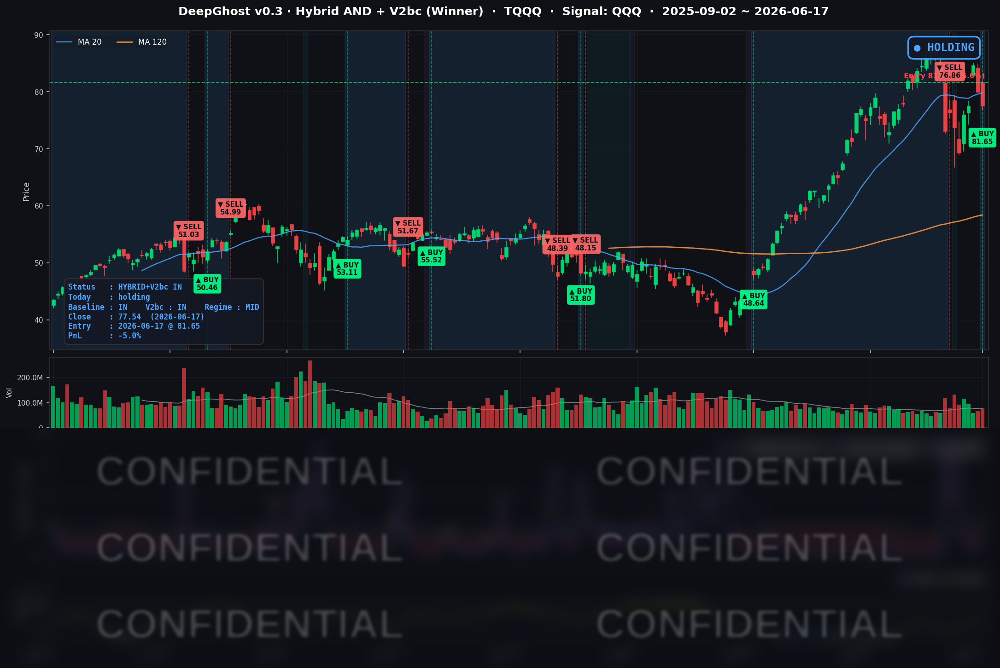

예상대로 오후 신임 의장의 첫 FOMC 매파 점도표가 시장을 끌어내리며 진입 첫날부터 마이너스로 출발했습니다. 선물시장은 하락은 모두 되돌리고 있으나 시장이 앞으로 어떤 방향으로 나아갈지는 본장에서 확인해봐야 할 것 같습니다.
📊 오늘의 매매 신호
| 항목 | 내용 |
|---|---|
| 오늘 할 일 | ✅ 아무것도 안 해도 됩니다 |
| 포지션 상태 | 📈 TQQQ 보유 중 (IN POSITION) |
| 매수 진입일 | 2026-06-17 (1일째) |
| 진입가 → 현재가 | $81.65 → $77.54 |
| 현재 포지션 수익 | -5.0% |
어제(6/16) 매수 신호가 나왔고, 오늘(6/17) 미국 장 시초가 $81.65에 체결되며 다시 TQQQ를 보유하게 됐습니다. 매수는 이미 끝났으니 오늘 추가로 하실 일은 없습니다. 다만 체결 직후 오후에 열린 연준 회의가 매파적으로 나오면서 종가가 진입가를 밑돌아, 첫날부터 -5.0% 평가손으로 출발했습니다. 불편한 시작이지만, 어제 글에서 미리 말씀드린 "진입 첫날부터 연준 변동성을 떠안게 된다"는 시나리오가 현실이 되었습니다.
TQQQ 시그널 — IN POSITION
현재 상태: 매수 포지션 유지 중 | 진입 첫날 평가손 -5.0%

오늘 미국 시장 — 시황 요약
지수 마감
| 지수 | 종가 | 등락률 |
|---|---|---|
| S&P 500 | 7,420.10 | -1.21% |
| 나스닥 종합 | 26,021.66 | -1.34% |
| 다우 존스 | 51,492.55 | -0.98% |
| 러셀 2000 | 2,917.98 | -0.72% |
전 지수가 하락했습니다. 기술주 비중이 큰 지수일수록 더 많이 빠졌습니다(나스닥 -1.34% > S&P -1.21% > 다우 -0.98% > 러셀 -0.72%). 매파적인 연준 회의 결과 직후에 자주 나타나는 전형적인 패턴입니다. 다만 소형주(러셀)가 상대적으로 덜 빠진 점은, 이번 매도세의 진짜 원인이 "금리 급등"이라기보다 밸류가 높은 대형 기술주의 가격 재조정에 있었음을 보여줍니다.
국채 금리 동향
| 만기 | 수익률 | 전(유효)일 대비 |
|---|---|---|
| 3개월 | 3.647% | +2.9bp |
| 5년 | 4.229% | +1.6bp |
| 10년 | 4.463% | -2.4bp |
| 30년 | 4.926% | -4.9bp |
흥미로운 그림입니다. 단기 금리(3개월·5년)는 올랐고, 중장기 금리(10년·30년)는 오히려 내렸습니다. 연준이 단기 정책은 더 조이겠다고 하니 단기 금리는 올랐지만, 그 결과 중장기 성장과 물가는 결국 억제될 거라는 시각이 장기 금리를 끌어내린 셈입니다. 이런 형태를 곡선 평탄화라고 부릅니다. 만기가 긴 성장주(QQQ·TQQQ)에는 장기 금리가 핵심 변수인데, 장기 금리가 내려준 점은 진입 포지션에 오히려 완충 역할을 했습니다. 10년물에서 3개월물을 뺀 장단기 차이는 +81.6bp로 정상적인 우상향을 유지했습니다(경기 침체를 알리는 역전은 아님).
연준 발언 & 금리 패스
오늘의 주인공은 단연 연준 회의(FOMC), 그것도 신임 케빈 워시(Kevin Warsh) 의장이 처음 주재한 회의였습니다.
- 금리는 3.50~3.75%로 동결됐습니다(12-0 만장일치). 동결 자체는 예상대로였습니다.
- 문제는 점도표였습니다. 위원들이 보는 2026년 말 적정 금리 전망 중앙값이 3.4%에서 3.8%로 큰 폭 상향됐고, 직전까지 시사됐던 "연내 1회 인하"가 사라졌습니다. 인하 시점이 2027~2028년으로 미뤄진 것입니다. 18명 위원 중 9명이 연내 추가 인상까지 내다봤습니다.
- 워시 의장은 "오늘 인상이 필요하다고 본 위원은 없었다"며 진화에 나섰지만, 점도표의 매파적 메시지가 시장을 압도했습니다.
요약하면, 동결은 예상대로였으나 "더 오래 높은 금리"가 다시 강화된 하루였습니다.
오늘의 핵심 이슈
- 워시 의장의 첫 회의, 매파 점도표 충격. 금리 동결은 예상대로였지만 연내 인하 시사가 삭제되면서 위험자산이 일제히 매도됐습니다. 신임 의장 체제가 어떤 색깔을 낼지도 관전 포인트입니다.
- 대형 기술주 약세 vs 반도체 강세. 메타(-5.44%)·MSFT(-3.79%)·아마존(-3.46%) 같은 플랫폼·소프트웨어 대형주가 크게 빠진 반면, 브로드컴(+4.30%)·인텔(+3.46%)·마이크론(+2.20%) 등 반도체는 거꾸로 올랐습니다. 지수는 빠졌지만 시장 안에서 돈이 자리를 옮긴 하루였습니다.
- 변동성 상승. 공포지수(VIX)가 16.41에서 18.44로 +12.4% 올랐고, 공포탐욕지수는 40(공포)으로 내려갔습니다. 다만 VIX 18선은 아직 패닉이라 부르기엔 이른 경계성 상승입니다.
변동성 & 투자심리
- VIX(공포지수): 18.44 — 전일(16.41) 대비 +12.4% 급등. 다만 20을 넘지 않은 18선은 본격적인 불안이라기보다 이벤트성 경계감에 가깝습니다.
- 공포탐욕지수(Fear & Greed): 40 (공포) — 어제(41)보다 한 단계 더 위축됐습니다. 매파 충격으로 심리가 중립 아래로 내려간 모습입니다.
전반적으로 보면, 매도세가 거셌지만 소형주가 선방하고 VIX도 20을 밑돌았다는 점에서 전면적인 패닉이라기보다는 "고밸류 성장주 차익실현 + 금리 재계산"의 성격이 강했습니다.
매크로 & 원자재
- 유가: WTI $75.36(-0.91%), 브렌트 $78.99(+0.04%) — 보합권에서 소폭 약세. 미·이란 평화 합의 기대 등 지정학 완화와 달러 강세가 서로 상쇄됐습니다.
- 금: $4,292.80(-0.88%) — 매파적 연준에 따른 실질금리 상승과 달러 강세 압력으로 약세 마감했습니다.
주요 종목 동향
| 종목 | 전일 종가 | 당일 종가 | 등락률 | 비고 |
|---|---|---|---|---|
| META | 600.21 | 567.58 | -5.44% | 커버리지 내 최대 낙폭, 고밸류 플랫폼 직격 |
| MSFT | 393.83 | 378.91 | -3.79% | 대형 소프트웨어 약세 주도 |
| AMZN | 246.00 | 237.50 | -3.46% | 소비·클라우드 대형주 동반 하락 |
| GOOGL | 373.25 | 363.79 | -2.53% | 커뮤니케이션 섹터 약세 |
| NFLX | 78.72 | 76.96 | -2.24% | 성장주 디스카운트 |
| TSLA | 404.66 | 396.38 | -2.05% | 고성장주 약세 |
| NVDA | 207.41 | 204.65 | -1.33% | 반도체지만 대형주에 묶여 소폭 하락 |
| AAPL | 299.24 | 295.95 | -1.10% | 상대적 방어 |
| QCOM | 214.07 | 212.97 | -0.51% | 반도체, 보합권 선방 |
| MU | 1,020.76 | 1,043.19 | +2.20% | 6/24 실적 기대·AI 메모리 수요, 장중 +8% 터치 |
| INTC | 117.05 | 121.10 | +3.46% | AI 칩 투자심리 회복, 반등 지속 |
| AVGO | 376.71 | 392.90 | +4.30% | 커버리지 내 최대 상승, AI 인프라 수요 기대 |
대형 기술주는 전반적으로 빠졌지만, 반도체 3인방(브로드컴·인텔·마이크론)은 거꾸로 올랐습니다. AI 인프라 수요 기대와 마이크론의 6월 24일 실적 발표를 앞둔 기대가 반영된 흐름입니다. 지수가 빠지는 와중에도 시장 안에서는 돈이 빠져나간 게 아니라 자리를 옮긴 하루였고, 이 반도체 강세가 나스닥의 낙폭을 일부 떠받쳐 준 면도 있습니다.
Ghost.AI — Quantitative AI Investment
Model: DeepGhost v0.3 | Transformer-Based Deep Learning
Coverage: 13 tickers | Updated every trading day after US market close
⚠️ 본 자료는 정보 제공 목적으로만 작성되었으며 투자 권유가 아닙니다. 모든 투자의 책임은 투자자 본인에게 있습니다. 과거 성과가 미래 수익을 보장하지 않습니다.
[유의사항]
고스트에이아이 주식회사는 「자본시장과 금융투자업에 관한 법률」 제101조에 따른 유사투자자문업자로 등록된 사업자입니다.
- 본 서비스는 불특정 다수를 대상으로 발행되는 단방향 정보 제공 서비스이며, 투자자 개인의 재산 상황·투자 목적·위험 선호도를 반영한 개별 투자 조언이 아닙니다.
- 고스트에이아이 주식회사는 고객과 쌍방향 의사소통(개별 상담, 맞춤형 자문 등)을 제공하지 않습니다.
- 본 콘텐츠는 투자 권유 또는 매매 주문의 청약·청약의 권유에 해당하지 않으며, 최종 투자 판단 및 그에 따른 손익의 책임은 전적으로 투자자 본인에게 있습니다.
고스트에이아이 주식회사 | 유사투자자문업 등록번호: 제2025-000호